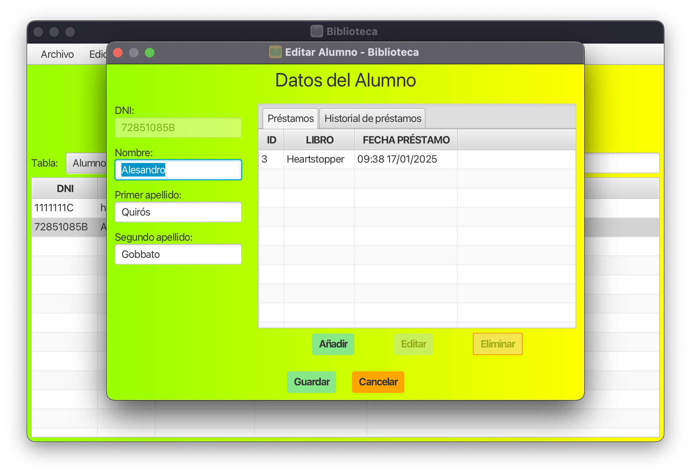

Gestión de Alumnos
Esta ventana permite gestionar la información de estudiantes y sus préstamos bibliotecarios.
Sección de Datos Personales
- DNI: Campo para el documento de identidad
- Nombre: Nombre del estudiante
- Primer Apellido: Primer apellido del estudiante
- Segundo Apellido: Segundo apellido del estudiante
Panel de Pestañas
En el lado derecho se encuentra un panel con dos pestañas:
- Pestaña de Préstamos Actuales: Tabla que muestra los préstamos vigentes con botones para añadir, editar o eliminar registros.
- Pestaña de Historial de Préstamos: Tabla que muestra el historial completo de préstamos con las mismas opciones que la pestaña anterior.
Botones de Control Principal
- Guardar: Almacena todos los cambios realizados.
- Cancelar: Descarta los cambios y cierra la ventana.
Notas de Uso
- Los botones de Editar y Eliminar permanecen deshabilitados hasta que se seleccione un registro en la tabla correspondiente.
- Todos los campos de texto permiten la entrada directa de información.
- La interfaz está completamente localizada y puede mostrar textos en diferentes idiomas.
